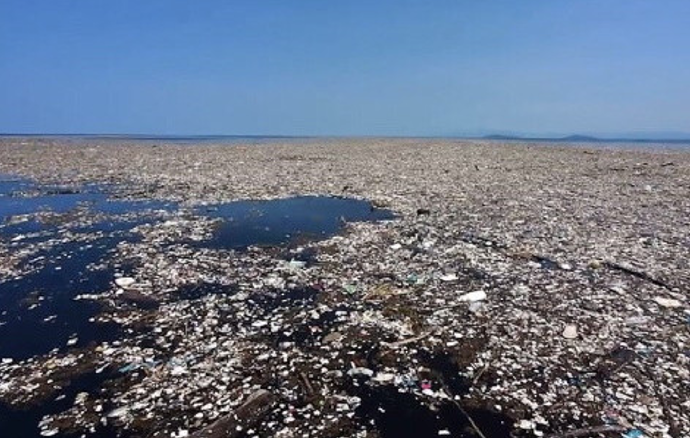
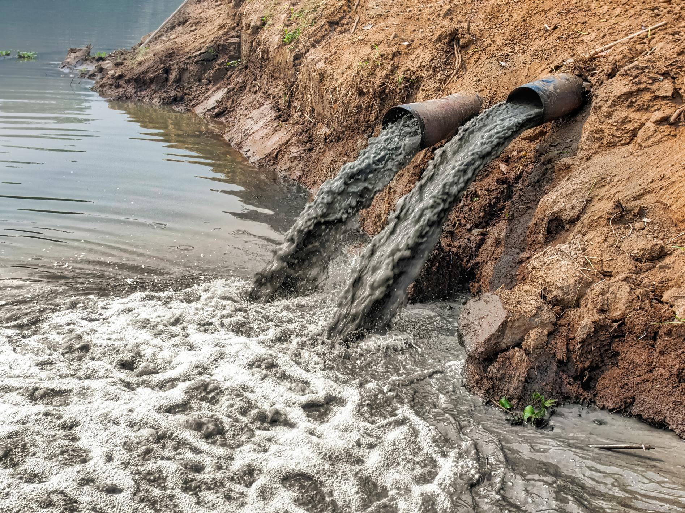
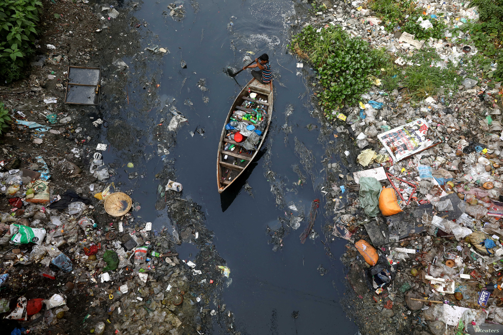
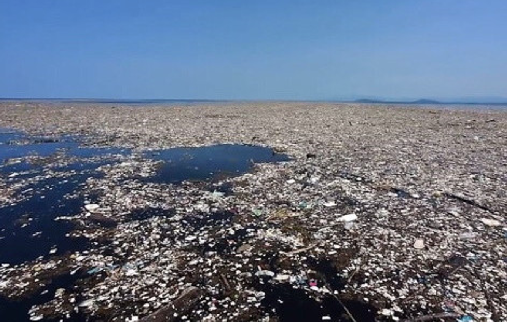
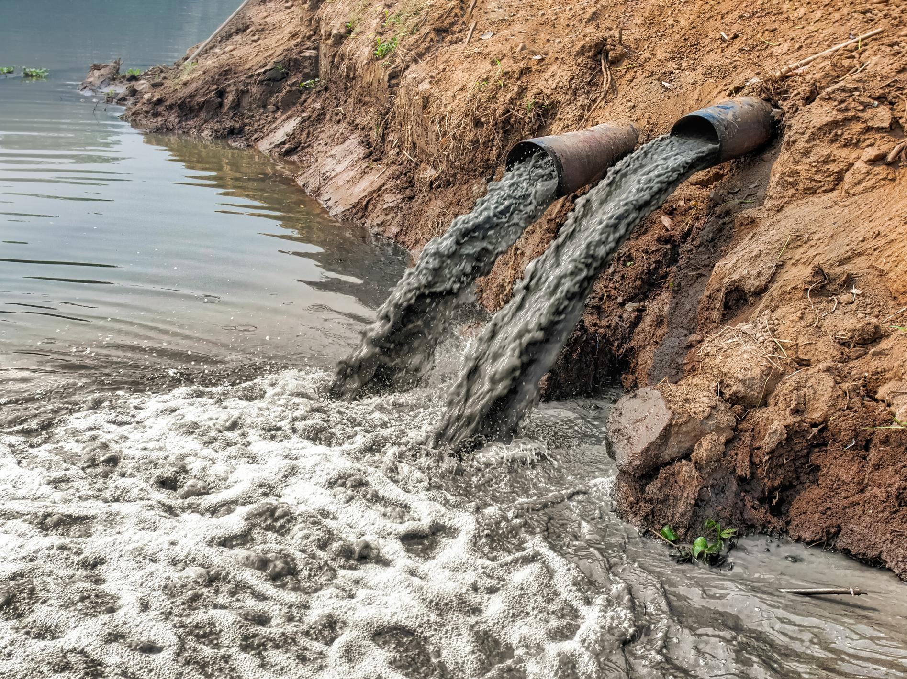
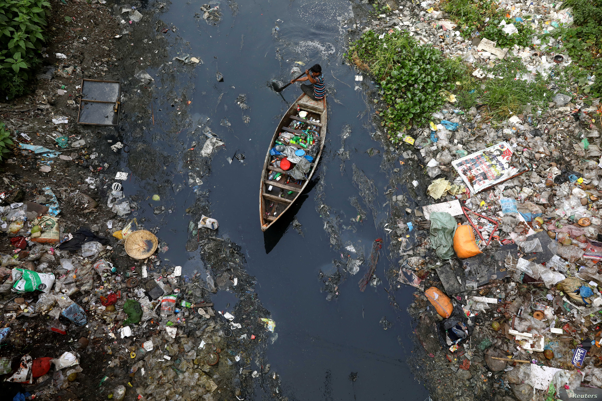

Water Pollution
Water pollution occurs when harmful substances contaminate a stream, river, lake, ocean, aquifer, or other body of water. These harmful substances degrade water quality and rendering it toxic to humans or the environment.
What causes the pollution to get in the water?
Water is very vulnerable to pollution. Water can dissolve more substances than any other liquid on earth. In some ways, it can be polluted by toxic substances from farms, towns, and factories that readily dissolve into and mix with water.
Possible ways that water can be contaminated
- Corroded water pipes that can spill out harmful chemicals
- Hazardous waste sites and industrial waste
- Soil pollution mixing into the water
- Sewage and food processing waste
- Hazardous chemical, such as arsenic
Most common types of water contamination
- Agricultural
- Sewage and wastewater
- Oil pollution
- Radioactive substances
Types of Water Pollution
Groundwater
Groundwater occurs when rain falls and seeps deep into cracks, crevices, and porous spaces of an aquifer. We rely on groundwater being pumped to the earth’s surface for drinking water. For some people in rural areas, it’s their only freshwater source. Groundwater gets polluted when contaminants from pesticides and fertilizer leach from landfills and septics systems. This leaching makes its way into aquifers rendering them unsafe for human use. Getting rid of groundwater contamination can go from difficult to impossible tasks, as well as costly. Once polluted, an aquifer may be unusable for decades, or even up to thousands of years. Groundwater can also spread contamination far from the original polluted source. It can go to streams, lakes, and oceans.
Surface Water
Surface water covers about 70 percent of the earth. Surface water fills our oceans, lakes, rivers, and other bodies of water. Surface water from freshwater sources accounts for more than 60 percent of water delivered to American homes. A large portion of that water is in danger from water pollution. According to the EPA (Environmental Protection Agency), nearly half of our rivers and streams are polluted and unfit for swimming, fishing, and drinking. The leading type of pollution in these waters is nutrient pollution, which includes nitrates and phosphates. Plants and animals need these nutrients to grow, they have become a major pollutant due to farm waste and fertilizer runoffs. There is also all the random junk and waste that industry and individuals dump directly into waterways.
Ocean Water
Eighty percent of ocean pollution comes from land. Contaminants such as chemicals, nutrients, and heavy metals are carried from farms, factories, and cities by steam and rivers into the ocean. Marine debris is mostly plastic blown in by the wind or washed in from storm drains and sewers. The seas are also being spoiled by oil spills and leaks, and are consistently soaking up carbon pollution from the air. The ocean absorbs as much as a quarter of man-made carbon emissions.
Different types of sources
Point source
A point source is when contamination originates from a single source. Examples of this include wastewater discharged legally or illegally by manufacturers, oil refineries, or wastewater treatment facilities. The EPA regulates the point source pollution by limiting what can be discharged by a facility directly into a body of water. This can affect miles of runoffs and oceans.
Nonpoint source
Nonpoint source pollution is contamination from diffuse sources. This can include agricultural or stormwater runoffs or debris blown into waterways from land. Nonpoint source pollution is one of the leading causes of water pollution in the U.S, but it’s difficult to regulate since there’s no identifiable culprit that is causing it.
Transboundary
Water pollution can’t be contained by a line on a map. Transboundary pollution is contaminated by water from one country spilling into another country. Examples of transboundary pollution are oil spills, agriculture, and discharging of wastes.
What are the effects of Water Pollution?
Human Health
Human health has potential effects on polluted water. These effects can range from how severe depending on the chemical and total exposure.
- Arsenic is known human carcinogen associated with skin, lung, bladder, kidney, and liver cancer
- Lead has behavioral and developmental effects in children; and cardiovascular and kidney problems
- Hydraulic fracturing chemical has damage the immune and reproductive system
- Pesticides has effects on neurodevelopmental effects and Parkinson’s disease
Environment Health
A healthy ecosystem relies on a complex web of animals, plants, bacteria, and fungi, which all interact, directly or indirectly, with each other. Harming any of these organisms can create a chain effect.
Water pollution can cause algal bloom in a lake or marine environment. This new introducing nutrient stimulates plant and algae growth, which in turn reduces oxygen levels in the water. This reduction of oxygen level in the water suffocates plants and animal and can create “dead zones,” where water are devoid of life
Chemical and heavy metals from industrial and wastewater contaminate waterways. These contaminants are very toxic to aquatic life which is most often reducing an organism’s life span and the ability to reproduce. This makes its way up the food chain having the prey, such as big fish, accumulate high quantities of toxins.
Marine ecosystems are also threatened by marine debris, such as plastics, which can strangle, suffocate, and even starve animals. Much of this is solid debris, turning our oceans into trash soup, and sometimes forming floating garbage patches, such as the Great Pacific Garbage Patch. Moving aside fishing, other types of debris are responsible for harming more than 200 different species of marine life.
Ocean acidification is making it tougher for shellfish and coral to survive. They absorb about a quarter of the carbon pollution created each year by burning fossil fuels. Oceans are becoming more acidic, which may impact the nervous system of sharks, clownfish, and other marine life.
Examples of Water Pollution
 




